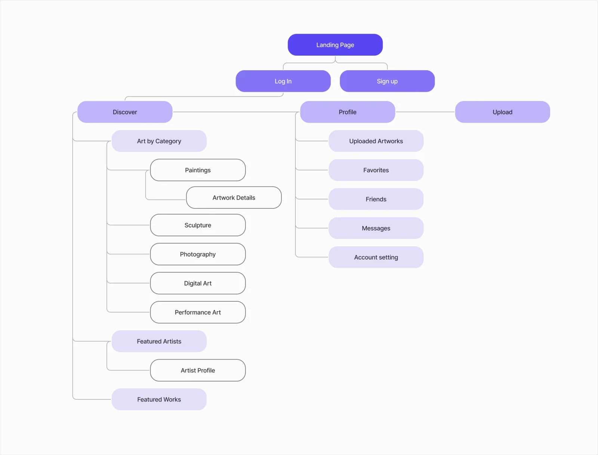
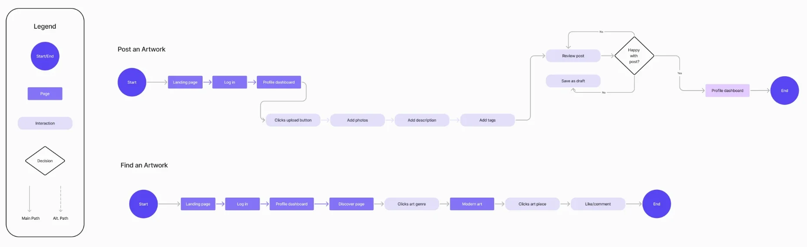
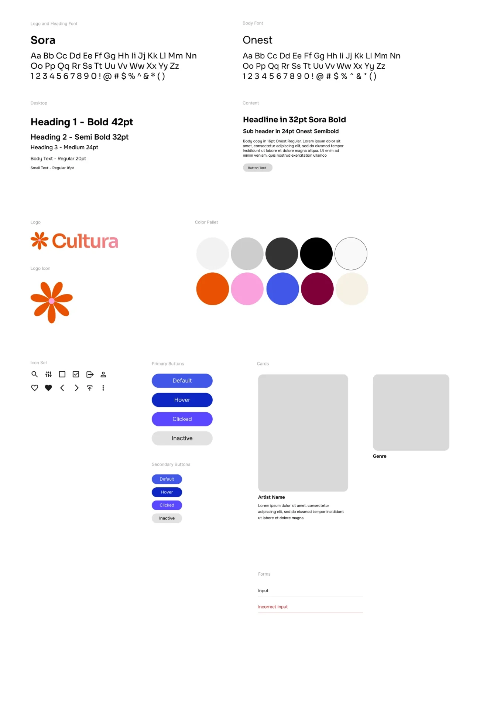

Context
Cultura was a group project for the Programming for Digital Media module (CS7025) in my MSc in Interactive Digital Media at Trinity College Dublin.
The idea was mine. Every country has regional art forms with no dedicated platform. Many people practise them as hobbies or side passions, and their work often goes unseen or uncredited. Cultura gives these artists a space to share their creations, tell their stories and connect with an appreciative audience.
The goal: a digital hub where artists upload, showcase and discuss their work, encouraging cultural exchange and preserving traditional art forms through community and storytelling. It focuses on authentic, everyday creativity, not only traditional or mainstream art.
My role
- Concept and direction: developed the initial concept and visual direction.
- UX/UI: designed the interface and built the Figma prototype.
- Identity: chose the name and created the presentation materials.
- Front-end: built pages with HTML, CSS and Bootstrap.
Design process
Scoping the features
Before designing, I sorted the ideas into what the platform must have and what would be nice to have.
- A personalised feed of global art based on user preferences
- Integration with APIs to show art from around the world
- Filter and search by genre, artist, era, country and more
- Upload and share your own artwork
- Community interaction: likes, comments, follows
- Themed collections by region, time period or culture
- Rate and review artwork
- Multiple languages, for a wider audience
- Connect art profiles to Instagram or Pinterest
- An interactive map to explore art by location and culture
Information architecture
After logging in or signing up, everything hangs off three areas: Discover (art by category, featured artists and featured works), Profile (your uploads, favourites, friends, messages and account settings) and Upload.

User flows
I mapped the two core journeys. Post an artwork: upload, add photos, a description and tags, then review, and either publish or save as a draft. Find an artwork: Discover, pick a genre, open a piece, then like or comment.

Style guide
Sora for the logo and headings, Onest for body text, and a warm orange flower as the logo mark. The palette pairs neutrals with orange, pink, blue and deep burgundy. The guide also defines primary and secondary buttons in four states (default, hover, clicked, inactive), artist and genre cards, and form fields with an error state.

Features
- Accounts: sign up, log in and out; change email, biography and password; delete your account permanently.
- Search: find artworks, artists or mediums with a dropdown filter (artworks by default).
- Upload: add artworks through a form that accepts .jpg, .jpeg, .png and .webp images.
- Comments: respond to any artwork.
- Profile: edit or remove your own artworks, and manage your favourite artworks, artists and mediums.
Personalised discovery
The Discover page starts useful on day one and gets more personal the more you use it:
- No preferencesRecent artworks & top artistsTop artists are those with the most artworks
- After sign-upYour mediumsArtworks and artists that use the mediums you picked
- As you likeNew from your favouritesRecent work from artists you've favourited
- As you likeArtists you may likeBased on the mediums of artworks you've liked
To seed the platform, the first artworks came from friends, family and my own creations.
Technology
- Front end: HTML5, EJS, CSS3 and JavaScript, with Bootstrap for responsive layouts.
- Back end: Node.js on the server, with Express.js for the APIs.
- Database: MySQL, managed through phpMyAdmin.
Outcome
Cultura showed how digital media can connect artists and audiences through cultural storytelling. It's a prototype for community-driven art discovery that values authenticity, diversity and creative heritage.